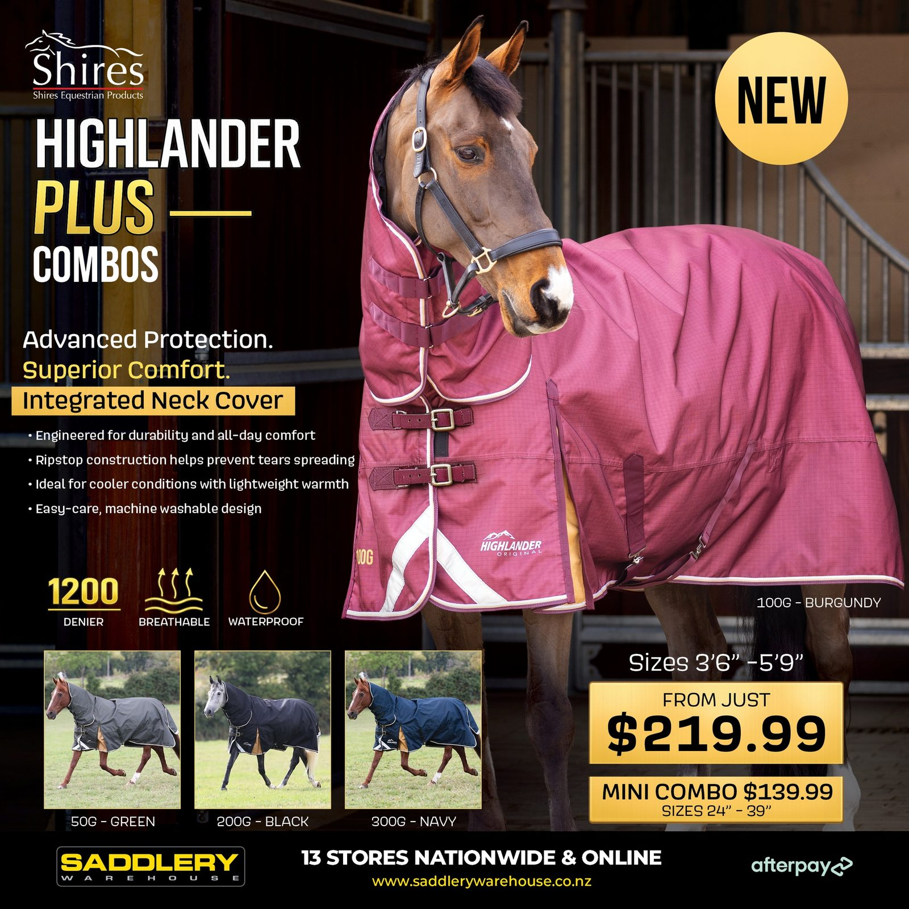
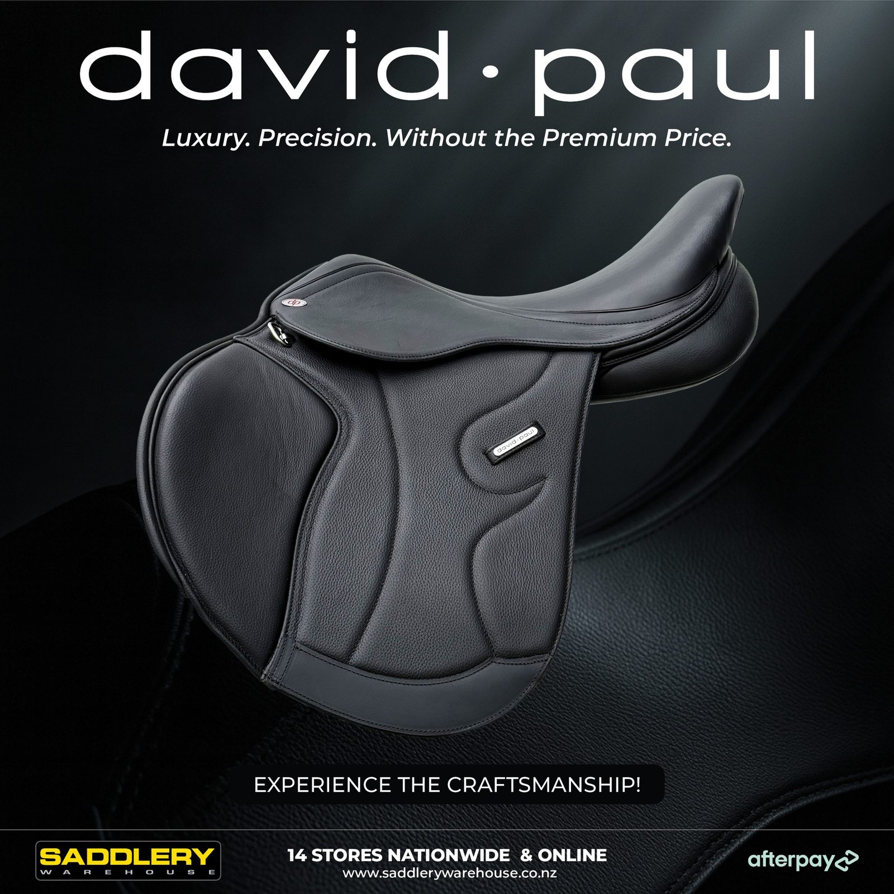
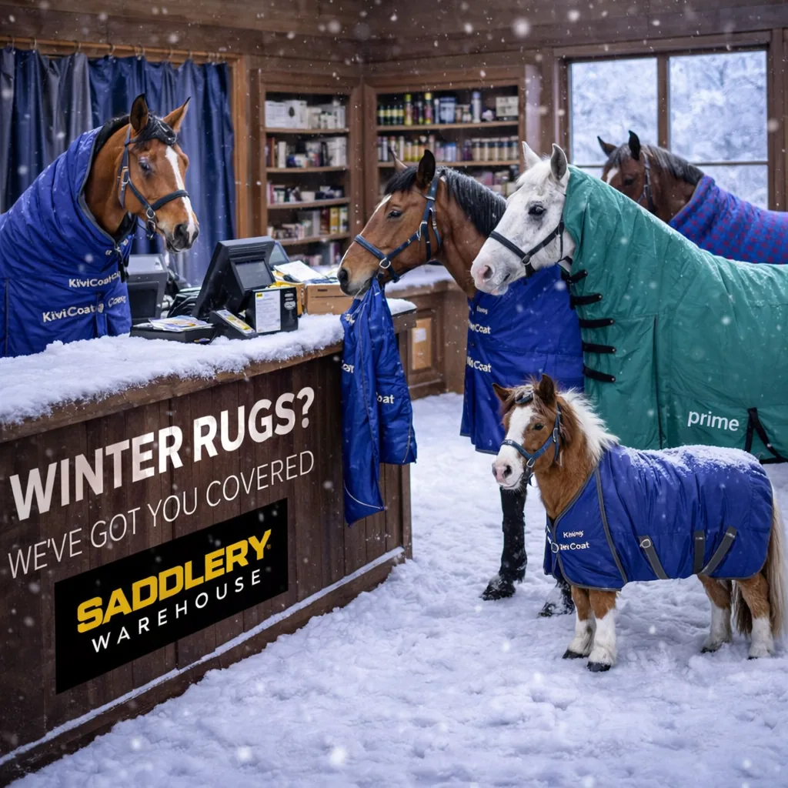

01
Cooper Allan — Mila Long-Sleeve Shirt
Long-sleeve performance shirt — branding placement on the neck and sleeve with its specification.
DESIGN — GRAPHIC & DIGITAL
Commercial design across digital, social, e-commerce, print and retail — strong visual communication with practical marketing thinking, built to sell.
FEATURED CASE STUDY
One idea carried through email, social, digital ads and the website. This is how real retail work ships.
 Ringers Western — Denim For Every DirectionOne campaign, one idea: email, Instagram story, digital ads in 4:5, 1:1 and 16:9, and two website banner sizes — for the Work / Western / Everyday denim range.CAMPAIGN SYSTEM — CONCEPT → ART DIRECTION → SOCIAL → EDM → WEB → POS → CATALOGUEOPEN CASE STUDY
Ringers Western — Denim For Every DirectionOne campaign, one idea: email, Instagram story, digital ads in 4:5, 1:1 and 16:9, and two website banner sizes — for the Work / Western / Everyday denim range.CAMPAIGN SYSTEM — CONCEPT → ART DIRECTION → SOCIAL → EDM → WEB → POS → CATALOGUEOPEN CASE STUDY SELECTED CAMPAIGNS
Retail promotions, gift guides and product campaigns, with layouts adapted to their audience and format.
MORE CAMPAIGN WORK
Selected product launches, seasonal promotions and giveaway campaigns.

8 SELECTED EXAMPLESProduct & RetailEquestrian Retail AdvertisingCommercial retail campaigns for multiple equestrian product ranges — horse rugs, racing gear and seasonal collections. Bold typography, product-first layouts and pricing that moves.OPEN CAMPAIGN
6 SELECTED EXAMPLESCommercial Brand CampaignsProduct promotions and advertising for retail and equestrian brands — saddles, health lines, western gear and helmets. Strong visual impact, clear product stories, built for digital and retail.OPEN CAMPAIGN
12 SELECTED EXAMPLESCreative TechnologyAI-Powered Visual DesignAI-assisted creative campaigns, promotional graphics and social designs for retail brands — strong concepts, generated and art-directed with modern AI tools.OPEN CAMPAIGN 8 SELECTED EXAMPLESSocial CampaignsGiveaways & Audience EngagementGiveaway campaigns and promotional designs built to grow engagement — eye-catching visuals, product promotion and simple entries that connect brands with their audience online and in store.OPEN CAMPAIGN
8 SELECTED EXAMPLESSocial CampaignsGiveaways & Audience EngagementGiveaway campaigns and promotional designs built to grow engagement — eye-catching visuals, product promotion and simple entries that connect brands with their audience online and in store.OPEN CAMPAIGN  6 SELECTED EXAMPLESProduct & RetailWestern Tack & Hardware CampaignsProduct campaigns for western riding gear and equestrian hardware — bits, spurs and saddle pads in a clean, premium retail style. One consistent look, each range its own identity.OPEN CAMPAIGN
6 SELECTED EXAMPLESProduct & RetailWestern Tack & Hardware CampaignsProduct campaigns for western riding gear and equestrian hardware — bits, spurs and saddle pads in a clean, premium retail style. One consistent look, each range its own identity.OPEN CAMPAIGN  5 SELECTED EXAMPLESProduct & RetailLincoln Horse Care CampaignRetail advertising across hoof care, first aid and stable maintenance — bold colour-coded layouts, product-focused compositions and clear feature callouts for the full Lincoln range.OPEN CAMPAIGN
5 SELECTED EXAMPLESProduct & RetailLincoln Horse Care CampaignRetail advertising across hoof care, first aid and stable maintenance — bold colour-coded layouts, product-focused compositions and clear feature callouts for the full Lincoln range.OPEN CAMPAIGN MAGAZINE ADVERTISING
One-third-page magazine ads: a narrow column that has to carry the product, the price and a reason to visit the store, and still read at a glance.
FROM SCREEN TO PRODUCT.
Product branding, packaging and the supplier guides that tell a manufacturer exactly how to make it.
Twelve of 100+ product projects across seven brands: logos, garment graphics, packaging, swing tags and labels. The creative direction, branding, graphic design and production guides are all mine.
Long-sleeve performance shirt — branding placement on the neck and sleeve with its specification.
Long-sleeve riders baselayer — script branding, placement and sizing guide.
One T-shirt graphic — the artwork, the finished garment and the production specification.
Leather outdoor boot — branding, box artwork and packaging labels.
Leather half-chaps — branding, swing tag design and tag dimensions.
Apex saddle — the debossed APEX mark on the leather and the product brand artwork.
Glitter saddle pad — rubberised badge application and its size specification.
Boot cleaner packaging — box artwork, sticker design and die-line placement.
Winter gusset rug — rubber badge design, application and specification.
Neoprene sport medicine boots — colourways, rubber label and retail packaging.
Kickout Offset stirrup packaging — box artwork, sticker and production layout.
Sparkle halter — rubber badge branding, swing tag and specification.
ENVIRONMENTAL & SIGNAGE
Storefronts, a sponsored horse truck and show jumps: the brand at building, road and arena scale.
SELECTED ENVIRONMENTAL & SIGNAGE WORK — retail signage, sponsorship branding, event structures and vehicle graphics.
Tauranga · Albany · Pukekohe — one retail identity adapted across different buildings and physical constraints.
Large-format vehicle graphics — design, production specification and installed result.
Large-format branded obstacle design for equestrian events.
CATALOGUE & EDITORIAL
Covers, spreads and detail — 1,000+ catalogue pages across print and digital, where controlling large amounts of information is the whole job.
BEYOND THE ARTWORK
My job title is Social Media & Marketing Executive. In practice I have owned design at Saddlery Warehouse: campaigns from idea to rollout, 1,000+ catalogue pages, product branding and supplier specifications for seven brands, and store signage from render to install. I work directly with buyers, suppliers, printers and sign-makers.
EARLIER WORK